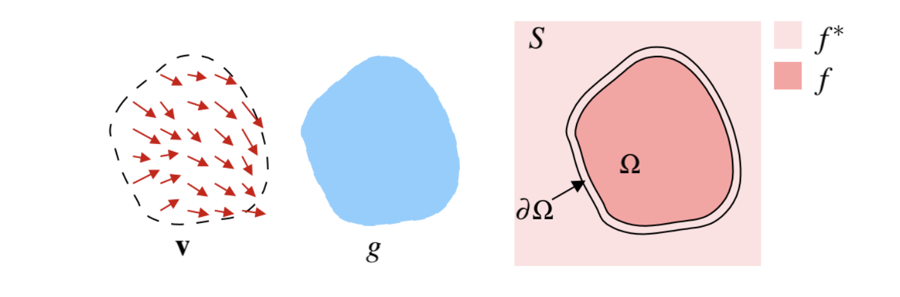
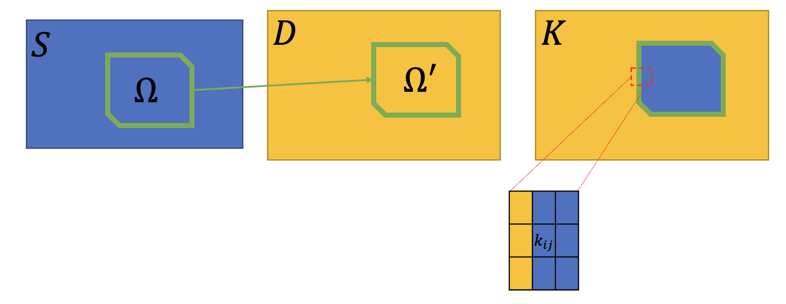

Lab3¶
背景¶
实现泊松融合（图像融合的一种方式）。
数学原理¶
数学知识预备¶
梯度 \nabla g，拉普拉斯算子 \displaystyle\Delta f=\frac{\partial^2f}{\partial x^2}+\frac{\partial^2f}{\partial y^2}，散度 \displaystyle\text{div }\textbf{v}=\frac{\partial u}{\partial x}+\frac{\partial v}{\partial y}
二维拉普拉斯方程：\psi_{xx}+\psi_{yy}=\nabla^2\psi=\text{div }\nabla\psi=\Delta \psi=0
泊松方程：-\Delta \psi =f，这里 f 是已知函数，\psi 是未知函数，解方程需要边界信息，如一个有界开集 \Omega，满足 $$ \begin{cases} -\Delta \psi=f & \text{ in } \Omega \ \psi=g & \text{ auf } \partial \Omega \end{cases} $$ 在离散的图像上，\displaystyle\frac{d^2f}{dx^2}=\frac{f(x+1)-2f(x)+f(x-1)}{2}，卷积核 \begin{bmatrix} 0 & 0 & 0\\ 1 & -2 & 1\\ 0 & 0 & 0 \end{bmatrix} + \begin{bmatrix} 0 & 1 & 0\\ 0 & -2 & 0\\ 0 & 1 & 0 \end{bmatrix} = \begin{bmatrix} 0 & 1 & 0\\ 1 & -4 & 1\\ 0 & 1 & 0 \end{bmatrix}
论文核心内容¶
泊松融合的核心思想不是让需要融合的两张图像直接叠加，而是让目标图像 D 在融合部分根据源图像 S 的引导场（实际是梯度场）“生长” 出新的图像。
也就是说，只需要提供 S 的梯度场，让 D 根据自身特点，按照 S 对应的梯度场生成融合部分。由于 D 是按照自身特点出发生成融合区域，所以融合结果会显得更加自然。 
需要融合的区域是 \Omega，f^* 是 S-\Omega 部分的已知函数，f 是 \Omega 上的未知函数。
合并后的图像看上去尽量平滑： $$ \min_f\iint_\Omega|\nabla f|^2\quad\quad \text{s.t. }f|{\partial\Omega}=f^|_{\partial\Omega} $$ 再要求 D 保持本身的纹理信息，但在边界上看不到明显的处理痕迹： $$ \min_f\iint_\Omega|\nabla f-\nabla I|^2\quad\quad \text{s.t. }f|_{\partial\Omega}=f^| $$ - I：S 中被合成的部分 - V=\nabla I 是梯度场 - f：合并后 D 在 \Omega 内的像素值 - f^*：合并后 D 在 \Omega 外的像素值
用 V 作为求解式的引导场，合并后图像在 \Omega 内的像素值 f 的梯度与 I 的梯度越接近，原始纹理就保持得越好，此时使用变分的方法可以得到 \Delta f=\Delta I，也可以写成 \Delta f=\text{div }\nabla I，这就是泊松方程的形式了。
离散图像上的处理¶
拉普拉斯算子的离散算式： $$ \Delta I=I_{i+1,j}+I_{i,j+1}+I_{i-1,j}+I_{i,j-1}-4I_{i,j} $$ 因为 I 是已知的图像，所以可以提前将 I 处理成 B=\Delta I，所以泊松方程写成 $$ f_{i+1,j}+f_{i,j+1}+f_{i-1,j}+f_{i,j-1}-4f_{i,j}=b_{i,j} $$ 这样上面的方程就变成了矩阵方程，如一个 3\times3 的矩阵： $$ \left[\begin{array}{ccccccccc} -4 & 1 & & & & & & & \ 1 & -4 & 1 & & & & & & \ & 1 & -4 & 1 & & & & & \ & & 1 & -4 & 1 & & & & \ & & & 1 & -4 & 1 & & & \ & & & & 1 & -4 & 1 & & \ & & & & & 1 & -4 & 1 & \ & & & & & & 1 & -4 & 1 \end{array}\right]\left[\begin{array}{l} f_{11} \ f_{21} \ f_{31} \ f_{12} \ f_{22} \ f_{32} \ f_{13} \ f_{23} \ f_{33} \end{array}\right]=\left[\begin{array}{l} b_{11} \ b_{21} \ b_{31} \ b_{12} \ b_{22} \ b_{32} \ b_{13} \ b_{23} \ b_{33} \end{array}\right] $$ 左侧这个矩阵是稀疏、正定、对称的，因此涉及到稀疏线性系统的求解，注意左下角和右上角还可能有一些稀疏的 “1”，代表上方和下方的像素，这里 -4 代表自己，左右的 1 代表的是左右相邻的像素。为了后文方便叙述，不妨记这个式子为 AF=B。
还需要考虑 f|_{\partial\Omega}=f^*|_{\partial\Omega}，也就是给边界上的值确定。
Matlab 实现¶
这个实验的难点是，给定的输入是一个 n\times 2 的矩阵，每一行表示的是一个顶点坐标，这些坐标一起围成了多边形 \Omega。也就是说这里的 F 不一定是把一个矩阵从行列形式拆成列形式就行，每一行的像素个数可能不同，导致表示上方和下方的像素不能简单的通过矩阵索引来完成，下面会具体讲一些实现上的细节。
如何选中所有多边形内的像素？Matlab 提供了 poly2mask 函数，可以将一个图像转化为多边形依赖的二值掩模矩阵。举例来说，如果我们之前通过一些特定的函数，如 boundingBox 创建了包含多边形在内的最小矩形 T，将此矩形转化为掩模矩阵 M 之后，在多边形范围内的位置为 1，反之则为 0。
如何将不规则的像素多边形列化？我们可以遍历 M 的每行、每列，给所有范围内的像素一个编号，这样 F=[f_1\quad...\quad f_m]^T，这里 1\cdots m 就是像素的编号序列。我们可以就在 M 上进行编号化，这样后面构造 A 时，可以直接通过 M 索引所需像素的上下方像素编号。
如何构造矩阵 A ？矩阵 A 是一个稀疏矩阵，其非零元素占比是 O(5n/n^2)=O(1/n) 的，所以我们通过三元组 rows, cols, vals 记录非零元素值，然后使用 sparse 构造稀疏矩阵。稀疏矩阵可以通过 decomposition 进行分解，得到比较小的矩阵，加速计算。这种分解通常是根据特定的算法进行的，具体过程可能会因算法而异。例如，如果需要对矩阵进行降维，可以选择奇异值分解（SVD），如果需要解线性方程组，则可以选择 LU 分解等。
如何构造矩阵 B ？矩阵 B 相当于是把原图像的 \Omega 位置拼接到目标图像上，然后在拼接的图像 K 上计算拉普拉斯算子作用之后的矩阵。举例来说，一个元素 [i,j]，如果其左边的像素也在 \Omega 中，则计算式中包含 K(k_{ij})-K(k_{i-1,j}) 项，如果不在，则包含 -K(k_{i-1,j}) 项（这个是原来的目标图像的像素）。对这个像素的上下左右四个像素都进行判断计算，就得到了 b_{ij} 的值，具体的编号还需要通过 M 来索引。

如何构造最终的图像？最终的图像需要把计算得到的 F 重新反序列化到目标图像上。
最终效果¶
懒得放了…… 恭喜退课…… 这门课的代码实现占用了太多的时间，但是原理还是非常有意思的，以后若有精力会继续更新相关作业的思考。